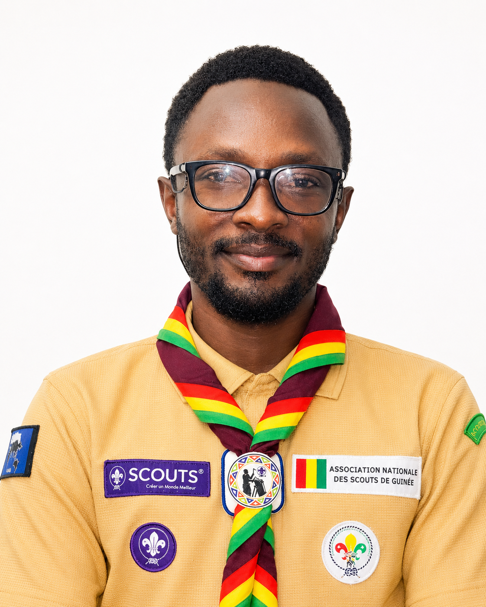

Candidat au poste de
Commissaire Général de l'ANSG
Rassembler · Reconstruire · Rayonner
16 années de service scout. Une expérience
nationale et internationale. Une vision ambitieuse
pour l'ANSG de demain.

Placez votre photo dans assets/photo.jpg
Qui suis-je ?
Un leader
forgé sur le terrain
Depuis 2008, je me suis engagé corps et âme dans le Scoutisme guinéen. De simple scout dans la région de Kindia à responsable national, chaque étape m'a appris que le service n'est pas un titre — c'est un choix quotidien.
Architecte de l'identité visuelle de l'ANSG, formateur certifié, représentant international dans 17 pays : j'ai bâti une expérience rare, à la croisée du terrain local et des instances mondiales du Scoutisme.
Je me porte candidat non pas pour occuper un poste, mais pour transformer une organisation. Avec vous, pour vous, pour nos scouts.
« Le scoutisme ne change pas le monde. Il change les personnes qui changeront le monde. »
Ma Vision
Pourquoi je me présente & ce en quoi je crois
Motivations
Une conviction,
pas une ambition
J'ai vu l'ANSG traverser des moments difficiles — des opportunités manquées, des ressources gaspillées, des jeunes scouts insuffisamment accompagnés. Ce n'est pas une critique : c'est un constat partagé par ceux qui aiment cette organisation.
Aujourd'hui, je me présente parce que je crois profondément que l'ANSG a les ressources humaines, l'histoire et le potentiel pour devenir une organisation de référence en Afrique de l'Ouest. Il nous manque l'organisation, la vision et la volonté.
Fort de 16 années de service, de certifications en gouvernance et en développement scout, et d'une expérience internationale dans 17 pays, je me sens prêt à porter ce projet collectif.
Ce n'est pas une candidature personnelle. C'est une invitation à bâtir ensemble une ANSG moderne, transparente et rayonnante.
« Je ne veux pas simplement gérer l'ANSG. Je veux la transformer — avec chaque chef, chaque scout, chaque région. »
Le projet en trois mots
Rassembler · Reconstruire · Rayonner
Mes Priorités
4 piliers stratégiques pour l'ANSG de demain
Ces quatre piliers forment un programme cohérent et réaliste, fondé sur mon expérience de terrain et ma connaissance des standards internationaux du Scoutisme. Chaque priorité est assortie d'actions concrètes et mesurables.
Bâtir une organisation solide sur des bases institutionnelles saines. La confiance se mérite par les actes, pas les discours.
- Système de reporting régulier aux membres
- Révision et actualisation des textes statutaires
- Audit financier annuel indépendant et public
- Redynamisation des structures régionales
Placer l'ANSG dans le XXIe siècle. Le numérique n'est plus un luxe — c'est une nécessité pour gérer, former et communiquer.
- Plateforme de gestion des membres et unités
- Formation en ligne des chefs scouts (e-learning)
- Refonte complète de la communication digitale
- Archives numériques et mémoire institutionnelle
Réduire la dépendance aux financements ponctuels. Une ANSG solide est une ANSG qui finance ses propres ambitions.
- Création d'un fonds de développement scout national
- Partenariats avec les entreprises guinéennes
- Optimisation du recouvrement des cotisations
- Accès aux fonds OMMS et partenaires internationaux
Faire entendre la voix de la Guinée dans les instances mondiales. Nos jeunes méritent une organisation qui leur ouvre le monde.
- Présence renforcée aux forums OMMS / Région Afrique
- Développement d'échanges scouts inter-pays
- Programme Messagers de Paix OMMS à grande échelle
- Accueil d'événements scouts régionaux en Guinée
Mon Parcours
16 années d'engagement — national & international
Chronologie
Expérience Internationale
Formations & représentations dans 17 pays
Contact
Échanger, questionner, soutenir
Restons en contact
Une question ?
Un échange ?
Je suis disponible pour toute question sur ma vision, mon programme ou mon parcours. La transparence et le dialogue sont au cœur de ma démarche.